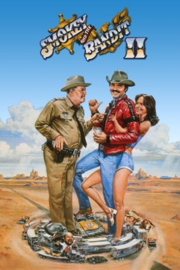

Country:United States, 100 minutes
Spoken languages:English, Spanish
Genres:Action, Comedy
Director(s):Hal Needham
Writer(s):Jerry Belson, Brock Yates
Video Codec:Unknown
Number: 2542


Certification:PG
Storyline:
The Bandit goes on another cross-country run, transporting an elephant from Florida to Texas. And, once again, Sheriff Buford T. Justice is on his tail.
Cast:

Medium: Original DVD,
Comments: Part of: Smokey and the Bandit - The 7-movie Outlaw Collection
Loaned: No
Aspect ratio: Unknown